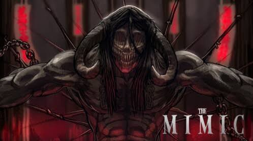
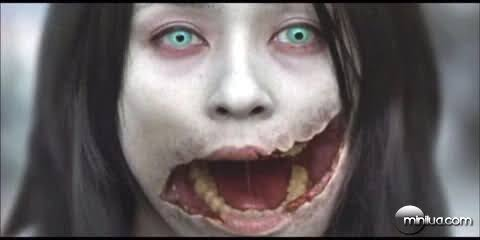
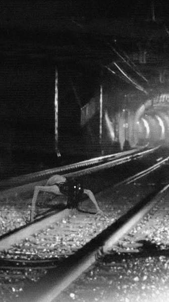
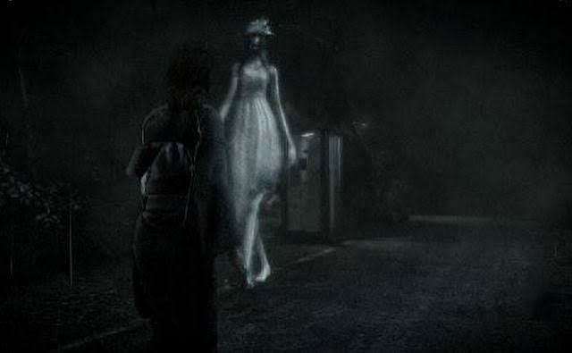

Bem-vindo ao mundo de The Mimic
Bem-vindos ao novo blog! Aqui vamos explorar o universo de The Mimic, um dos jogos de terror mais conhecidos do Roblox, além de conhecer lendas urbanas, criaturas e histórias assustadoras do Japão.
Explore os mistérios de The Mimic, lendas urbanas japonesas e histórias assustadoras.

Bem-vindos ao novo blog! Aqui vamos explorar o universo de The Mimic, um dos jogos de terror mais conhecidos do Roblox, além de conhecer lendas urbanas, criaturas e histórias assustadoras do Japão.

Kuchisake-onna é uma das lendas urbanas mais famosas do Japão. Segundo a história, uma mulher aparece usando uma máscara e pergunta às pessoas se ela é bonita. Dependendo da resposta, a lenda conta que algo terrível pode acontecer.

Teke Teke é uma famosa lenda urbana japonesa sobre o espírito de uma jovem que teria morrido após cair nos trilhos de uma estação. A história diz que ela aparece durante a noite e se movimenta usando as mãos ou os braços.

Hanako-san é uma das histórias de fantasmas mais conhecidas do Japão. De acordo com a lenda, uma garota fantasma pode ser encontrada no banheiro de escolas japonesas. Algumas versões dizem que é preciso chamar seu nome para tentar encontrá-la.

Hachishakusama é uma lenda urbana japonesa sobre uma misteriosa mulher extremamente alta. Ela costuma ser descrita usando roupas claras e emitindo um som característico. A história ficou famosa principalmente através de relatos publicados na internet.

Os yokai fazem parte do folclore japonês e podem assumir inúmeras formas. Alguns são assustadores, enquanto outros podem ser brincalhões ou até mesmo protetores. Muitas histórias modernas de terror e jogos de horror utilizam elementos inspirados nessas criaturas.

The Mimic mistura terror, histórias sobrenaturais e elementos
inspirados na cultura japonesa. O jogo apresenta diferentes
personagens, criaturas e ambientes assustadores.
Neste blog vamos investigar essas histórias, discutir teorias,
conhecer as criaturas e comparar os elementos do jogo com lendas
e mitos japoneses.
Qual criatura de The Mimic você acha mais assustadora?
Fonte: Folclore japonês.